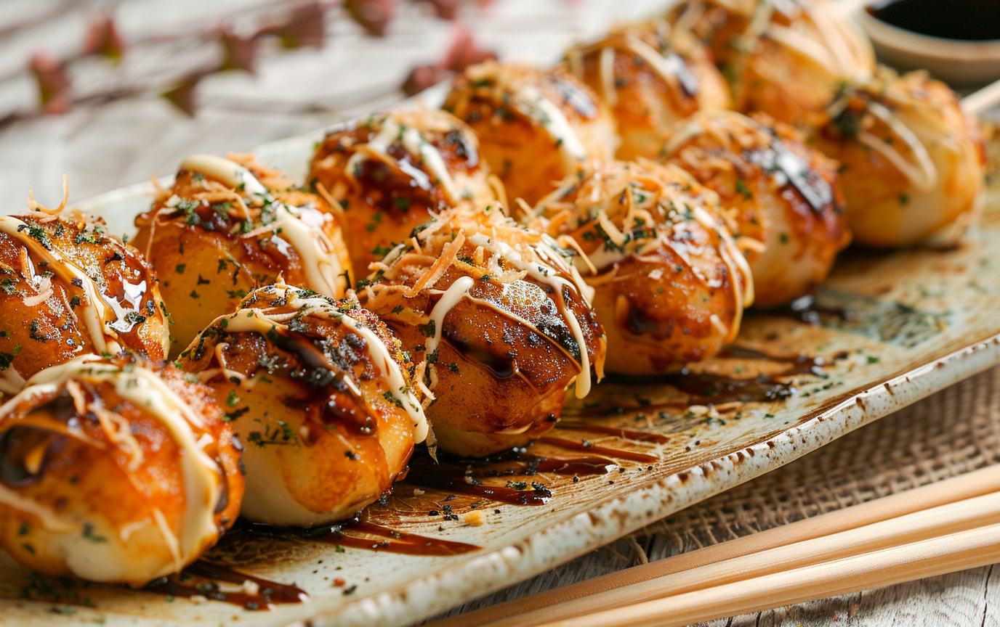
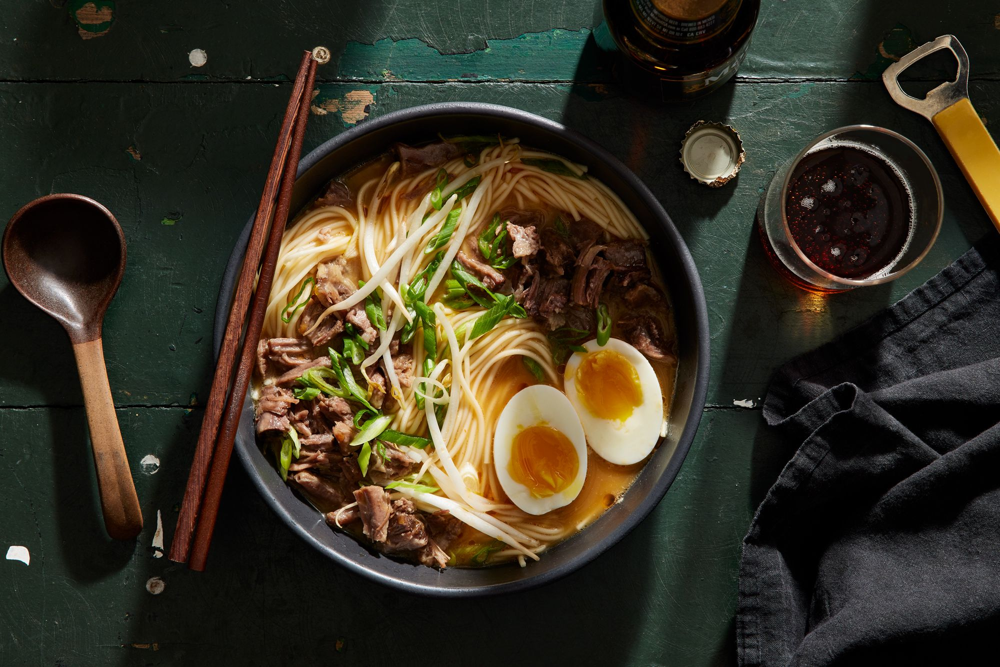
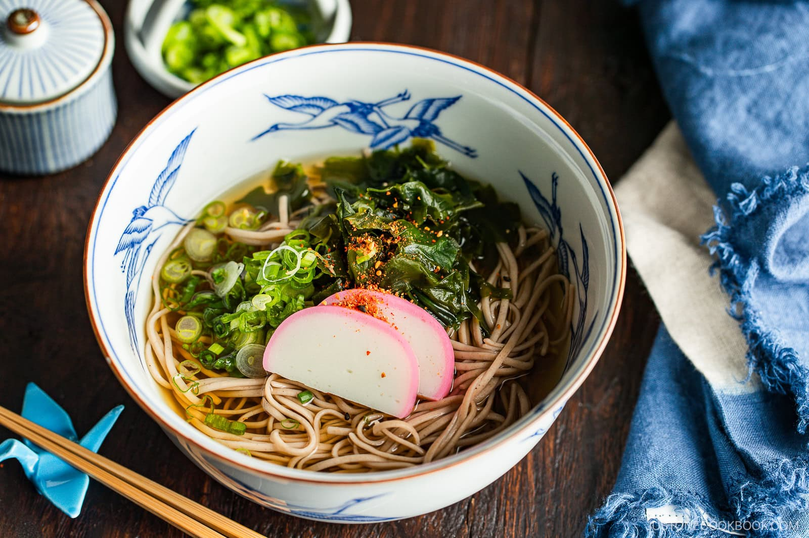
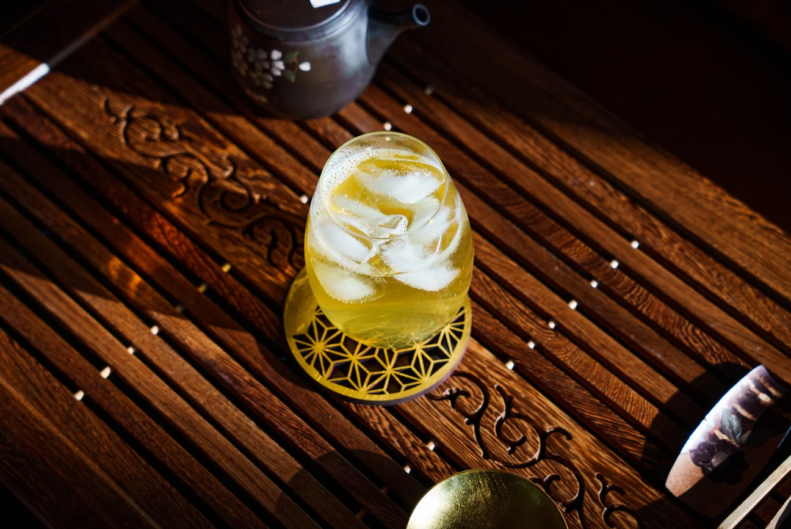

Menu
Appetizers

-
Chicken Kaarage
Japanese-style savory fried chicken with black pepper and matcha salt.
$7.50
-
Edamame
Izakaya-style soybean snack with garlin and dashi sauce.
$4.00
-
Gyoza
Dumplings filled with pork and chicken, served with dashi-based sauce and sriracha.
$6.00
-
Takoyaki
Octopus fritter topped with okonomi sauce and bonito flakes.
$5.00
-
Spicy Tonkatsu
Japanese-style pork cutlet topped with okonomi sauce and spicy mayonnaise.
$7.50
Ramen

-
Umami
Carefully prepared umami-happy dashi broth made with bonito flakes, kombu seaweed, scallop bouillon, and pork oil.
$13.50
-
Shoyu
Clear pork broth served with soy sauce-based flavor, chashu pork, seasoned egg, and scallion.
$12.00
-
Tonkatsu
Creamy pork bone broth served with chashu pork, seasoned egg, scallion, and seaweed
$13.00
-
Spicy Miso
Spicy dashi broth made with savory miso and chicken stock with a special blend of chili bean sauce and chili oil.
$13.00
-
Creamy Vegan
Rich and creamy vegan broth made with shiitake mushroom dashi, soy milk, and original sesame sauce.
$14.00
-
Yuzu Zen
Subtle citrusy aroma of Yuzu (Japanese citrus) with light and comforting, healthy vegan dashi broth. Inspired by traditional Japanese Shoujin (Buddhist temple) cooking techniques.
$15.00
-
Hamaguri
Light buttery dashi broth with notes of garlic, topped with umami-filled littleneck clams harvested from Asia.
$16.00
Other Noodles

-
Simple Udon
Udon noodles served in dashi broth with fish cake, wakame seaweed, scallions, shiitake, and tempura flakes.
$12.00
-
Tempura Udon
Udon noodles served in dashi broth with shrimp and assorted vegetable tempura.
$14.00
-
Simple Soba
Japanese buckwheat noodles served in dashi broth with fish cake, wakame seaweed, scallions, shiitake, and tempura flakes.
$12.00
-
Tempura Soba
Japanese buckwheat noodles served in dashi broth with shrimp and assorted vegetable tempura.
$14.00
-
Umami Chicken Soba
Japanese buckwheat noodles served in concentrated chicken broth, simmered to extract umami and natural richness.
$14.00
Drinks

-
Iced Tea
Unsweetened black or green tea with ice.
$1.00
-
Yuzu-ade
Freshly-squeezed yuzu juice with ice.
$3.00
-
Strawberry Yuzu-ade
A delicious blend of fresh strawberries and yuzu juice.
$3.50
-
Matcha Latte
Hand-whisked matcha with milk and cane sugar sweetener.
$4.00
-
Ramune
Refreshing Japanese soda with a fun marble stopper served in original bottle.
$2.00
-
CALPICO Soda
A can of sweet and tangy soda made with proprietary cultured milk derived from an original fermentation process.
$2.00
-
Junmai Sake
Chilled Junmai sake served in original bottle.
$16.00
Dessert

-
Matcha Ice Cream
Homemade soft-serve matcha cream served in a crispy cone or cup.
$5.00
-
Matcha Cream Pie
Flaky crust filled with matcha pastry cream and topped with vanilla bean whipped cream.
$10.00
-
Matcha Parfait
Soft-serve matcha and vanilla cream, matcha chiffon, chestnuts, and shiratama mochi.
$10.00
-
Yuzu Cheesecake
Slice of rich cheesecake featuring a refreshing yuzu aroma.
$10.00